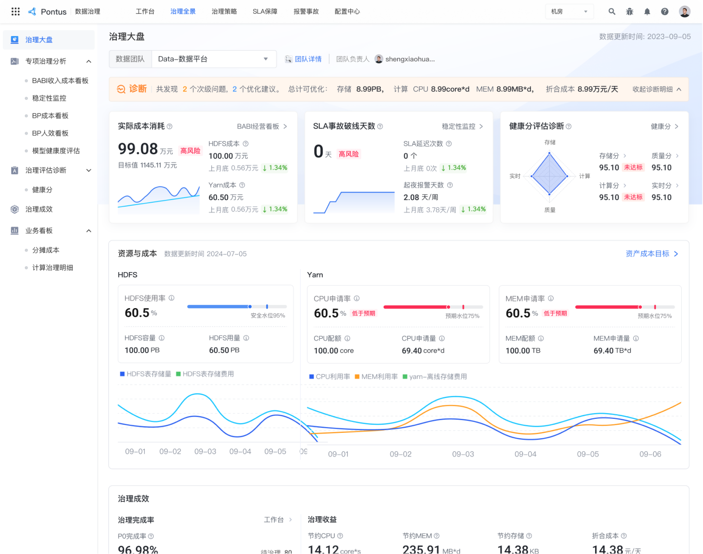
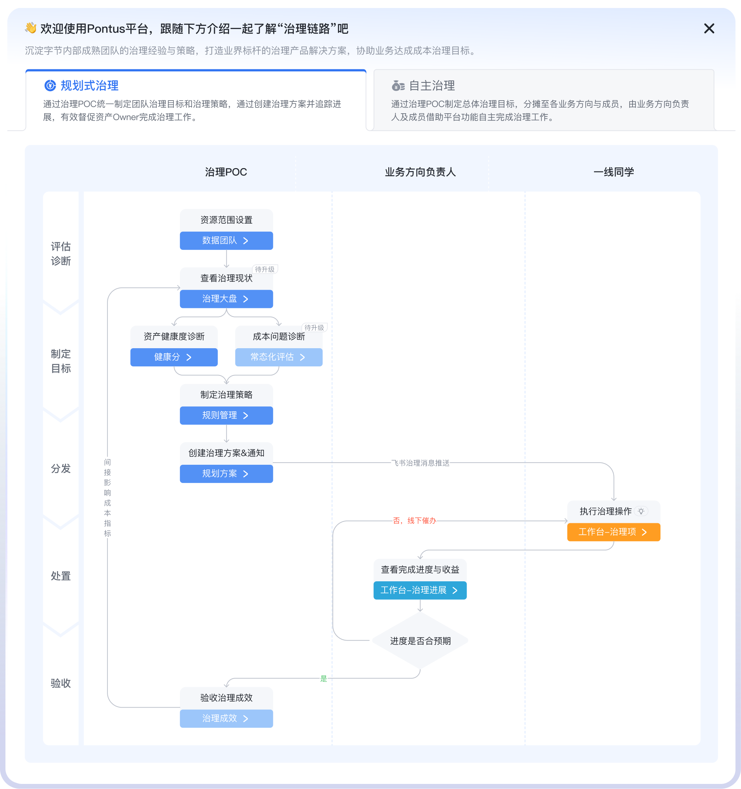
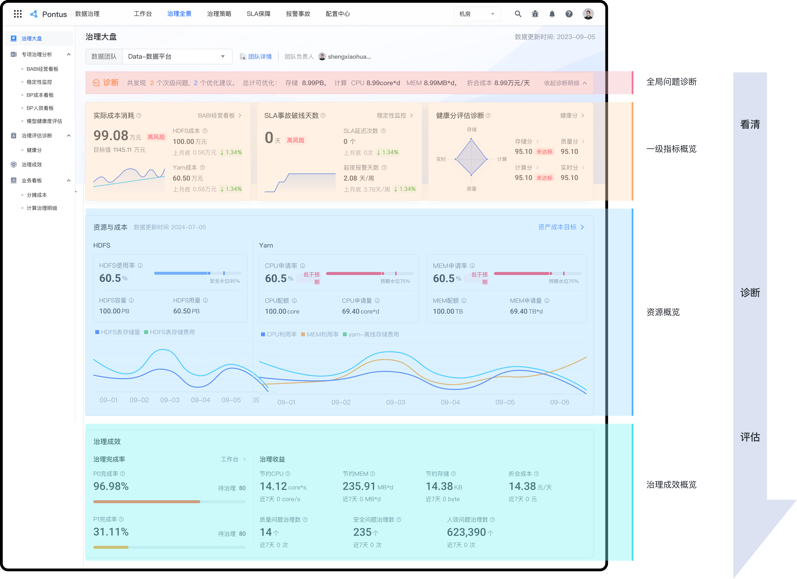
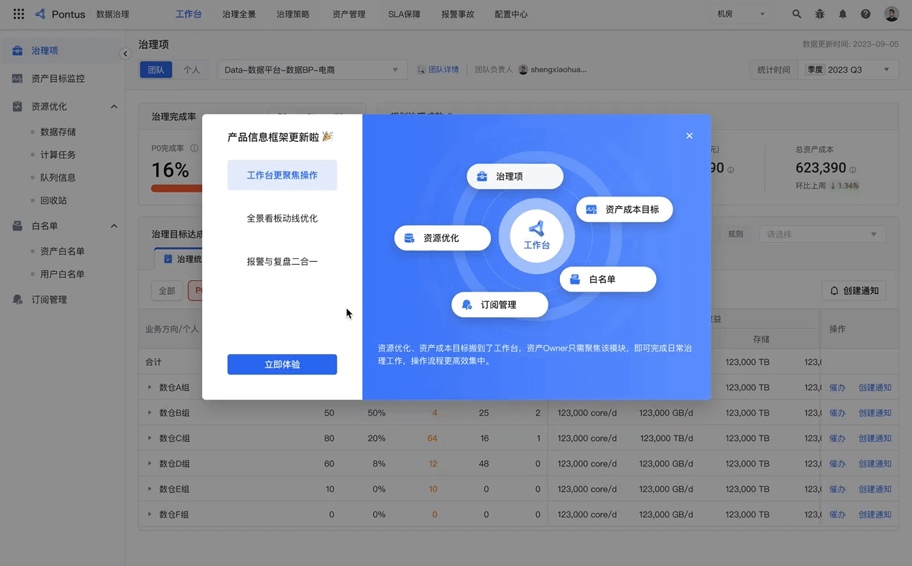
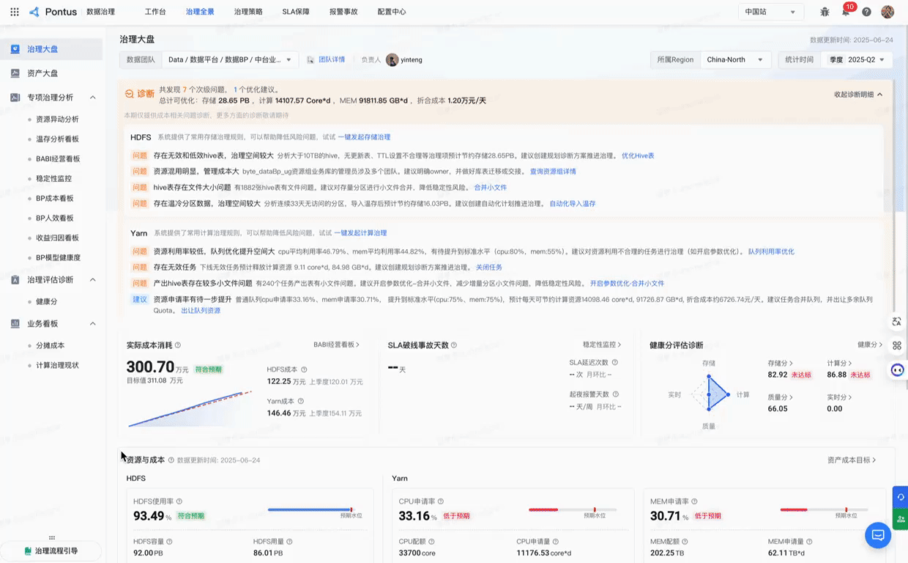

DATA GOVERNANCE
Pontus·框架与首页体验优化


- 参与设计师
- 1人
- 个人角色
- 设计Owner
- 设计周期
- 2026.05–2026.06
- 设计亮点
- 设计自发体验优化，并通过可用性测试优化方案
项目背景
- 治理平台本身场景复杂，包含成本、稳定性、报警多种场景的治理能力，同时也融合了主要三类角色视角的能力；三个PM各自负责独立模块的设计，缺乏顶层规划，导致功能堆砌，不同角色的视角、动线不够突出甚至混乱，Q1用户NPS调研中用户普遍反馈菜单很杂乱、产品让人用不明白。
- 加上24年初BP业务侧自建治理平台能力逐渐收拢到Pontus中，用户也逐渐迁移，所以产品信息动线亟需优化。
痛点分析
设计目标
- 优化产品动线，提升用户操作效率
- 提供多维引导，降低用户认知成本
调研洞察启发
设计策略
提供治理大盘“一图知全景”

增强引导—开屏引导与步骤式指引

增强引导—治理流程引导

结果与反思
8.50分
框架满意度
9.78分
治理链路引导满意度
91.67%
开屏引导用户评价有帮助+非常有帮助总占比
👍 做的好的
- 深入调研竞品与用户，为平台框架优化方案提供了启发与支撑
- 跨团队合作能力提升，与产研侧高效沟通，拉齐认知，积极脑暴优化方案，建立信任基础。
- 梳理平台菜单导航，并通过提供引导帮助用户快速上手，有效帮助用户平滑过渡至新框架
📈 有待改进的
- 度量采用的5分制，结果分值略高，之后可以调整为10分制度量。
- 用户调研中收集到的一些细致的体验问题本期没来得及优化，之后会与产品逐一对齐后续计划。
文档附录
- 调研分析：
- 🔗 成本治理链路-竞品分析🔗 成本链路-用户调研
- 方案脑暴：
- 🔗 框架方案探索
- 验证总结：
- 🔗 Q2 Pontus 框架优化+引导满意度调研